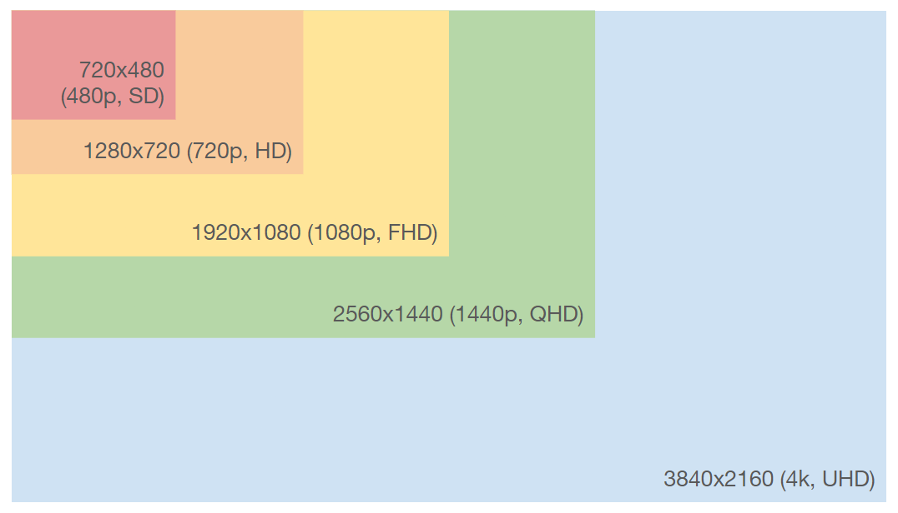

How to choose your new laptop
Let's explore together how accessible it is for anyone to efficiently select the best laptop for its needs.
Feeling like a colorblind person being asked to choose the red balloon when selecting your new laptop? In this article, we’ll go though an easy way for an efficient laptop selection.

First off: I’m not a laptop expert and my background is not in laptop hardware. Nevertheless, I had to purchase laptops for different purposes and different price ranges over the last 10-15 years, and thus I became quite thorough about benchmarking my options  Since I had to recently go through this process again, I thought I’d share how you can easily benchmark and choose the best laptop for your needs without much prior knowledge.
Since I had to recently go through this process again, I thought I’d share how you can easily benchmark and choose the best laptop for your needs without much prior knowledge.
 What this article is about:
What this article is about:
- main aspects of laptop comparison
- key aspects to easily get the best deal
 What this article is not about:
What this article is not about:
- telling you which laptop to buy right now
- incentivizing products or services of any kind
Click here 
To avoid putting too much information for casual readers, advanced topics will be hidden in those collapsible sections. Click on them to expand it if you want additional details!
How are we going to compare this
What is there to balance?
Here we’ll consider four main aspects: performance  , autonomy
, autonomy  , price
, price  , weight
, weight 
To elaborate a bit on the first aspect, “performance” has two sides:
- what produces pure performance: data read/write speed, data processing speed.
- how performance is served to the user: screen, keyboard, touchpad, connectivity slots, etc.
Main laptop components
The following concepts are very important as they define how you will experience your laptop (taking ages to open a single file  vs. feeling like your laptop is always waiting on you
vs. feeling like your laptop is always waiting on you  ).
).
Memory
For computers, we distinguish storage (things that remains saved even after shutting down your laptop) from RAM (information currently being used by your computer to perform a task at a given moment).
Storage
The information is written in this device so that when powered off, the data prevails. When using your file explorer, the files that you see are located on your storage device.

To compare storage options, consider their:
- storage capacity: a few hundreds of gigabytes (Gb) in 2022.
- storage type: HDD (Hard Disk Drive) or the faster but more expensive SSD (Solid State Drive).
HDD vs. SSD
HDD are spinning disks, similar to vinyl record/CD, with two layers: a ferromagnetic layer, where data is stored, and a protective layer. The data interactions are performed by a read/write head (actuator arm), by leveraging the relation between electric current and local magnetic field.SSDs don't have any disk, and each byte of information is written on MOS transistors. Thanks to the general trend of transistor density in manufacturing (cf. Moore law), we can now fit quite a lot of those on an integrated circuit.
Fragmentation of a HDD

If you have a HDD and data reading is starting to get slower, you might be experimenting fragmentation. Files that have been repeatedly read or moved, might physically be in a suboptimal order on your physical disk. Since the rotation speed of the disk is limited, fragmentation increases the time needed to access a given file.
You should consider defragmenting it (using free software, no rocket science to do on your side).
RAM

Conversely to storage, RAM is volatile: the data stored will be lost if it’s powered down. On a computer, you sollicitate the RAM as you open more web browser tabs or applications for instance. It is much faster than storage, but much more limited in terms of capacity (a few gigabytes up to a dozen in 2022).
RAM in-depth look
There are two other technical indicators for RAM:- RAM frequency: number of cycles per second (DDR4 RAM ranges from 1600 to 3600 MHz, while DDR5 ranges from 3200 to 6400 MHz).
- Column Access Strobe Latency (CL): number of clock cycles it takes for the RAM to respond to a command.
Dual-channel memory
When your CPU needs to hold data, but your RAM capacity or frequency isn't enough, it will start to use your storage device for this, which is much slower. Enters dual-channel memory to increase the transfer rate between the computer's memory and the CPU. Instead of having a single channel 8Gb RAM connected to your motherboard & thus CPU, having 2 4Gb RAM sticks will have the same RAM capacity as before but double the maximum speed.Processing units
Alright, we’re now into the core of a computer horsepower: its processing units!

CPU
Every personal computers has a Central Processing Unit (CPU). This component has several physical cores, that can process information independently. The number of physical cores is however limited, so while it can perform multi-tasking, it’s optimized for sequential tasks.
Key specifications of a CPU
- number of cores & threads: as mentioned previously, the CPU is separated into several physical cores. Each core can have several threads, which are virtual subdivisions of each processing capacity.- single-thread performance: how fast a single thread can perform operations
- clock speed: the number of cycles executed by the CPU each second.

That may not sound very appealing, right? Fortunately there are multiple online benchmarks that compare CPUs for you, and provide an aggregate performance score that you can reliably use for your own comparison (e.g. CPU Benchmark)
GPU
A Graphical Processing Unit (GPU)* is optimized for parallel operations. In 3D rendering or gaming, the computer needs to perform computation for each pixel (position, texture, lighting, etc.). Each of those pixel computations is independent, in the sense, that two neighbouring pixels don’t need the RGB value of their neighbour to compute theirs.
If we leave it up to the CPU to do this, as mentioned, the task parallelisation is quite limited. While CPU cores are more powerful, a modern GPU has several thousands of weaker ones, that’s why it’s well suited for this type of tasks 
Key specifications of a GPU
- VRAM: you now know that RAM is used for data transfer with the CPU, well VRAM is the same for the GPU. For gamers, as you push your graphics settings of a given game from "minimal" to "ultra", the GPU will need to load more refined textures and elements for each frame and thus need more VRAM.- number of cores: I won't get into too much details on this, because depending on the manufacturer and the generation, cores can have several types. They are analog to the physical cores of a CPU, but less powerful.
- Total Graphics Power (TGP): the power required by the GPU to perform its tasks. A higher value will drain the battery faster, and conversely for the processing throughput.

That’s a lot of information, I agree. Similarly to CPU, you can find multiple online benchmarks for GPU (e.g. GPU User Benchmark) that will do the heavy lifting for you!
The other lesser known siblings: TPU & IPU
- TPU: as deep learning grew bigger in the 2010s, people started looking at GPUs, which were designed for Gaming and 3D rendering, for their own purpose. In 2015, Google developed and started using internally Tensor Processing Units (TPU). Rather than repurposing something designed for video games, they worked on a chip for deep learning, and more generally speaking, tensor processing. You cannot purchase one, but you can experiment with it on Google Colab!- IPU: the company called Graphcore has been developping another chip of their own, called an Intelligence Processing Unit (IPU), which has become gradually known in the machine learning community.
Screen display
For your screen, there are three main aspects to consider: size, native resolution, refresh rate.
Screen size
Depending on your usage, you might have different preferences. Bigger screens are nicer for media and gaming, but the laptop becomes heavier. The current industry usually proposes 3 main options: 13’, 15’ or 17’ (number of inches along the diagonal of the display).
Native resolution

The native resolution is the number of pixels along each side of the display (that is 1920 pixels wide and 1080 pixels high for a Full-HD screen). As illustrated above, the market is nowadays dominated by FHD, QHD and UHD displays.
FHD vs. UHD
If you're using your laptop for media, and your movies are all in FHD (1080p), going for a laptop with QHD or UHD native resolution will cost you a lot more and won't change anything to your viewing (it might even be worse because the video will be upsampled upon rendering). You get optimal results when your screen native resolution matches the resolution of the media you are watching, and that also applies to gaming.Refresh rate
Alright, what is the refresh rate now? It is the maximum number of times a pixel on your screen will change value per second. What does this mean? A low value like 60Hz might sometimes look like there is some flickering, while high values like 165Hz will look much smoother.

Matte vs. glossy
especially, if you are using your laptop outside regularly, try to get a matte display. Otherwise the reflection might be disturbing in bright environments with a glossy display. Worth checking the difference over here [here](https://www.youtube.com/watch?v=qh7EmbwQU-I).Sum-up
With all this information, you deserve a quick recap!

Data read/write
- Storage: what you need to save more files on your computer. There are two types: HDD, and SSD. The latter is more expensive but faster. Whatever the type, the storage capacity ranges between 128Gb and several thousands of Gb.
- RAM: what you need to have more applications opened at the same time. The RAM capacity ranges from 4Gb to several dozens of Gb.
Data processing
- CPU: performs operations sequentially using the data stored in RAM, essential to your laptop whatever your usage. You can compare performances on websites such as CPU Benchmark.
- GPU: performs operations in parallel, not essential to your laptop (apart from gaming & other graphics intensive usages). You can compare performances on websites such as GPU User Benchmark.
Display
- screen size: the physical size of your screen.
- native resolution: the number of pixels on each side of your screen.
- refresh rate: how many times per second each pixel value can change.
The different usage types
You can always have multiple usage for your laptop, but I highly suggest you take a second to wonder what you will actually use it for in the coming years. I’ll distinguish 4 usage types and lay out how they translate in terms of comparison aspects:
- Gaming: no real concern for autonomy or weight, budget can vary, performance is key
- Media: no real performance requirement, budget should remain low, autonomy, weight and screen quality are key
- Working (software development, presentations, Excel, etc.): flexible budget constraints, performance is important, autonomy & weight are key
- Graphics intensive (deep learning, 3D rendering, etc.): similar to gaming, but performance of GPU is every more important, and autonomy is nice (but rarely compatible)
Benchmark & selection process
Before buying, why not upgrade?
If you already own a laptop, it’s possible to change some parts to boost performances without buying a new one.
What you can generally upgrade/replace1:
- RAM: if sometimes your computer freezes temporarily, you might want to switch to a larger RAM capacity.
- Storage: you don’t have anymore room on your laptop? You can replace it with a larger one. Transferring or reading data is really slow? You can upgrade your HDD with an SSD.
- Battery: if your laptop lasts doesn’t last as half as long as it used to, consider replacing the battery.
Whatever the type of modifications you’re considering, check whether your model can be upgraded (simple web search, or Youtube search), and if the replacing components are available for sale.
In a nutshell, slow data reading, insufficient storage, and dying battery are far from requiring the purchase a new laptop. Please don’t buy a new laptop if that’s the main reason, replacing a component is significantly cheaper and the planet will be quite thankful 
Narrow down the search scope
Here we’re trying to find a few good laptop options with minimal investigation time, by using the following criteria:
| Criteria | Options | Recommended |
|---|---|---|
| Screen size | 13’, 15’, 17’ | Up to you |
| Screen resolution | FHD/1080p, QHD/2k, UHD/4k | FHD is enough, the rest is up to you |
| GPU Y/N | None 2, AMD Radeon, NVIDIA GeForce | Only gaming and graphics really need a GPU. Compatibility-wise, deep learning require NVIDIA products for now. |
| CPU | Intel Core, AMD Ryzen | Whatever fits your budget and gets you the best performance 3 |
| RAM capacity | 4Gb, 8Gb, 16Gb, 32Gb | >= 8Gb |
| Storage type | HDD, SSD | HDD is you can afford it (it’s a must-have for deep learning) |
| Storage capacity | 256Gb, 512Gb, 1T, etc. | >= 512Gb |
| Price | N/A | Up to you |
Integrated vs dedicated graphics
Modern laptops always have a GPU, but we focus on dedicated GPUs here, which are much more powerful. You can easily recognize this with the brand: NVIDIA (GeForce products) and AMD (Radeon products) are the market leaders on dedicated GPUs, if it's from another brand (like Intel), it's most likely an integrated GPU. Confirm your hunch with a web searchGiven your budget, that should already narrow it down to a few laptop models.
Look closer

Once you’ve exhausted the search filters, we’re going to have to take a closer look?
| Criteria | Options | Recommended |
|---|---|---|
| Battery | 40Wh, 60Wh, 80-90Wh | GPUs consume more power, so graphics-intesive users should aim for at least 60Wh. |
| Keyboard layout | qwerty, azerty, etc. | depends on your region & spoken language |
| Wifi card | 11ac, 11ax | 11ax is the new, faster generation for Wifi |
| OS compatibility | Windows, MAC, Ubuntu | you’ll need Windows for Gaming, the rest is up to you |
Confirm your choice
Okay, now you should be hesitating between a few laptops. How do you find the best one for you?
Here is a quick checklist:
- check the manufacturer & product line current reputation 4
- compare the CPUs using online benchmarks 5
- if there is one, compare the GPUs using online benchmarks.
- watch 2-3 recent reviews or comparison videos 6 about those models (only look out for red flags).
Where to buy it

Congratulations, you found your ideal laptop 
Now to get your hands on it, at the best price, you should check:
- second-hand platforms (e.g. BackMarket): you might be surprised by how brand-new a refurbished product might look, and it’s cheaper!
- manufacturer website (e.g. Dell, Acer, Asus, Apple, HP, Lenovo, Razer, etc.)
- your favorite tech product store’s website
- searching for that model on a search engine (yes, please do, you might be able to save a lot with a deal that you missed)
A concrete example
I told you I had to go through this process recently right? A good example will better illustrates the previous sections.
Narrow down the search
Let’s start with my personal criteria:
| Criteria | Value |
|---|---|
| Usage | Working & Graphics intensive 7 |
| Sreen size | 15’ |
| Sreen resolution | FHD/1080p |
| Autonomy | >= 3-4h when not using the GPU |
| Budget | <= 1500€ |
| Keyboard layout | Azerty |
| Storage capacity | >= 512Gb |
The desired usage (deep learning), as mentioned previously, brings about more technical constraints:
- GPU: a powerful NVIDIA mobile GPU, of recent generations (RTX 20 or 30), with VRAM >= 6Gb.
- CPU: a powerful CPU, either an Intel Core 12th gen (>= i5) or 11th gen (>= i7), or an AMD Ryzen 6k series (>=5) or 5k series (>= 7).
- RAM capacity: >= 16Gb
- Storage type: SSD
I live in France, so I used the following websites for my initial search: LDLC, FNAC, CDiscount, and Amazon.
After setting those filters in May 2022, here is what I ended up with:
Take a closer look

So this means that for my budget, in my region, the following brands should be my focus: Acer, Asus, Dell, Lenovo, MSI. Let’s take a look at my criteria that don’t fit in a search filter:
| Criteria | Value |
|---|---|
| RAM dual channel Y/N | Y |
| Battery | >= 60Wh |
| Keyboard layout | azerty |
| Wifi card | >= 11ac |
| OS compatibility | Ubuntu |
To speed up the process a bit, I looked for a comparison video of best recent laptops in this category. Thanks to this review, I ruled out Acer Nitro 5 & Acer Helios (GPU, RAM & screen quality), and the MSI GF66 (terrible battery).
Which left me with (presumably already very good options):
Final showdown
Especially when two laptops are similar, there is a high probability that a detailed comparison video exists!
Comparison takeaways:
- 165Hz is much better
- wifi much faster on G15
- battery better on G15
- similar in terms of GPU perf
- both very good laptops
- those are AMD Ryzen versions, so we’ll have to compare the Intel CPUs ourselves
Let’s gather up all the important information and add the CPU Mark using online benchmarks.
| Dell G15 5520 | Lenovo Legion 5i (6th gen) | Lenovo Legion 5i (7th gen) | |
|---|---|---|---|
| Price | 1499€ | 1399€ | 1499€ |
| CPU | Intel Core i7 12700H | Intel Core i7 11800H | Intel Core i5 12500H |
| CPU Mark | 27642 | 21317 | 23224 |
| GPU | NVIDIA RTX 3060 | NVIDIA RTX 3060 | NVIDIA RTX 3060 |
| Screen | FHD, 165Hz | FHD, 120Hz | FHD, 165Hz |
| Storage | SSD, 512Go | SSD, 512Go | SSD, 512Go |
| RAM | 16Go 4800MHz, dual channel | 16Go, 3200Mhz, single channel | 16Go 4800Mhz, dual channel |
| Wifi | 11ax | 11ax | 11ac |
| Battery | 86Wh (6 cells) | 60Wh (4 cells) | 80Wh (4 cells) |
| Weight | 2.6kg | 2.4kg | 2.4kg |
The screen refresh rate, RAM and battery rule out the Lenovo 6th gen. And on the remaining specs that differ between the two contenders (CPU Mark, Wifi, Battery), the Dell G15 is superior, so that will be my pick!
Confirm the choice
Let’s run down the checklist:
- Dell is an established & reputed laptop manufacturers, and the reviews are excellent
- the CPU is actually the best mobile CPU on the market at the moment
 (May 2022)
(May 2022)
Note: Intel Core 11th and 12th gen
- the GPU is among the best ranked mobile GPUs

Tip: compare with your previous laptop
Out of safety, I compared the performances of this GPU with my last profesionnal laptop, a Razer Blade 15, NVIDIA RTX 2070 Max Q. It outperforms it by 8-12% on all aspects, while the price being much lower (1499€ for the Dell G15, while the Razer Blade was 2200€ and the end of 2020 when it was purchased). I did the comparison because performance-wise, I was very happy with that previous laptop.- let’s check a few laptop reviews
Review 1
- SSD & RAM are upgradable
- very good value for money in terms of perf thanks to 12th gen Intel CPU
- very good screen quality
- incredible battery
Review 2
- the laptop is a bit heavy
- very nice screen
- good keyboard
- best battery on the market
How to upgrade the SSD
Advanced note: MUX Switch
So this is a concept I discovered while benchmarking a few weeks back, an quite an interesting one, especially if you're using your laptop for Gaming!What does that mean?
- MUX Switch ON: data processed on dGPU, then directly displayed on screen.
- MUX Switch OFF: data processed on dGPU, then processed by iGPU, then displayed on screen.
Having a MUX switch gives you the choice. But when it's on, you get better FPS in games, at the cost of higher power/battery consumption.
No red flags, so the choice is confirmed 
Final tips to get the best out of your laptop
Help your heat management hardware
Your CPU & GPU heat your laptop up, and your fans speed up whenever the measured internal temperature gets higher to balance this. When you put your laptop on cloth for instance, as it’s partially obstructed, your fan will speed up even more  This has two consequences:
This has two consequences:
- reducing the life of your fans: they will operate much faster than without obstruction, for the same usage.
- endangering internal components: if the temperature gets too high, that will degrade hardware components prematurely.

What can you do for this?
- consider purchasing a laptop stand (or at least not obstructing the fans on a regular basis): the laptop will last longer, and your neck will thank you for it.
- clean it once in a while: it’s inevitable that dust will get in the way of your air entries at some point. Check online how to safely clean your fans.
A good night sleep for everyone
When you go to bed, consider shutting down your laptop instead of clapping it/putting it to sleep  Simply put, while in sleep mode, your hardware is sollicitated more than when shut down (remember, it’s not shut down so the RAM is loaded with data among others). If you put it to sleep, that will reduce its life expectancy.
Simply put, while in sleep mode, your hardware is sollicitated more than when shut down (remember, it’s not shut down so the RAM is loaded with data among others). If you put it to sleep, that will reduce its life expectancy.
Minimizing the number of charge cycles
Some people say that leaving it plugged won’t damage the battery well-being (same debate with smartphones), some say the opposite. I am no expert in charger and laptop battery manufacturing, but why take the risk?
When plugged, you sollicitate:
- your laptop charger
- your laptop battery
As a rule of thumb, since we don’t know for sure, if you don’t need max perf and have a lot of battery, unplug your charger 
The End

Bravo, you’ve made it here! Hopefully, you learnt a few things while reading this article, which still has a lot of room for improvements. If you spotted some imprecisions, mistakes, or if you have improvement ideas, please let me know 
-
some manufacturers, like Apple, don’t let people easily tweak the inside of their laptops. ↩
-
modern laptops will have an integrated GPU (iGPU), when they don’t have a dedicated GPU (dGPU). Usually the iGPU brand is the same as the CPU’s manufacturer. ↩
-
CPU generation can be more important than the model type. For instance, Intel Core i5 12th gen are more powerful than i7 11th gen. ↩
-
if they have very bad reviews and sales, this product line might disappear in the near future. ↩
-
on the product page, copy paste the CPU model in the search bar of the website. ↩
-
YouTube channels (e.g. JarrodsTech, MatthewMoniz, LinusTechTips) can be very useful. ↩
-
I would be using it for Deep Learning more specifically. ↩